전체 강의
국내 투자 전문가 7인의
국내 투자 전문가 7인의
강의 338개
누적 조회수 5,213만회 · 후기 52,041개 · 2026.10.15 기준
전체 강의338개 · 최신 공개순
18:25
ETF·연금 · 기초 강의 시리즈
"ISA는 가입했다고 끝이 아닙니다"...만들어놓고 멈춰버린 계좌를 채우는 '가장 단순한 조합'
이효석아카데미
2026.10.09 · 조회수 39만 · 후기 222
 13:44
13:44ETF·연금 · 전인구의 연금술사
개인연금 연 1,800만 원 한도 다 찼을 때 목돈 굴리는 비밀 방법 (ft.연금박사 이영주 대표, 김봉옥 이사)
전인구경제연구소
2026.10.03 · 조회수 2.4만 · 후기 5
20:02
주식입문 · 기초 강의 시리즈
“오늘 외국인이 많이 팔았습니다”…신문 1면 뒤에 숨은 금리·원달러·코스피의 진짜 계산
이효석아카데미
2026.10.02 · 조회수 24만 · 후기 35
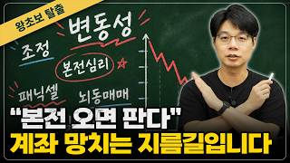
30:52주식입문 · 10주 완성 왕초보 탈출
시장은 당신이 얼마에 샀는지 알지도 못하고 관심조차 없습니다, 매수 단가에 묶여 파는 사람이 매번 후회하는 이유가 있습니다 | 왕초보 탈출 10탄
이효석아카데미
2026.09.30 · 조회수 26만 · 후기 172
15:45
주식입문 · 기초 강의 시리즈
"1억을 연 8%로 굴리면 매달 67만 원이 나온다"…월급 옆에 두 번째 월급을 만드는 가장 빠른 순서는 '이것'
이효석아카데미
2026.09.25 · 조회수 52만 · 후기 175
32:29
미국주식 · 10주 완성 왕초보 탈출
미국 주식 수익률만 보고 계신다면 절반만 보고 계신 겁니다. 주가가 올라도 손실이 될 수 있는 이유 | 왕초보 탈출 9탄
이효석아카데미
2026.09.23 · 조회수 15만 · 후기 55
12:54
ETF·연금 · 기초 강의 시리즈
"그냥 이거 사"...트럼프와 미국이 대놓고 밀어주고 찍어주고 부양하는 'ETF 종목' 이래도 안 하신다면 저만 하겠습니다
이효석아카데미
2026.09.18 · 조회수 74만 · 후기 269
22:45
ETF·연금 · 전인구의 연금술사
공동명의 아파트로 주택연금 신청할 때 '이것' 안 적으면 남은 배우자 길거리 나앉습니다 (ft.연금박사 이영주 대표)
전인구경제연구소
2026.09.17 · 조회수 3.7만 · 후기 3
24:04
주식입문 · 10주 완성 왕초보 탈출
계좌에서 아예 안 쳐다보게 된 종목이 있다면 이미 신호는 끝난 겁니다. -20%를 넘어가면 사람이 무감각해지는 구간이 옵니다 | 왕초보 탈출 8탄
이효석아카데미
2026.09.16 · 조회수 24만 · 후기 130
18:14
주식입문 · 기초 강의 시리즈
분배금이 따박따박 나온다고 다 좋은 게 아닙니다. 커버드콜이 맞는 사람과 맞지 않는 사람을 금융공학 전공자가 갈라드립니다
이효석아카데미
2026.09.11 · 조회수 43만 · 후기 638
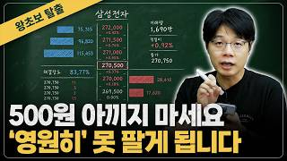
18:43주식입문 · 10주 완성 왕초보 탈출
몇백 원 더 받으려다 끝내 못 파는 일이 생깁니다, 이효석이 개인 투자자에게 시장가를 권하는 진짜 이유 | 왕초보 탈출 7탄
이효석아카데미
2026.09.09 · 조회수 33만 · 후기 65
17:18
미국주식 · 기초 강의 시리즈
"나스닥100은 매년 상위 100개 종목을 자동으로 갈아 끼웁니다"...제가 나스닥만 고집하는 이유"
이효석아카데미
2026.09.04 · 조회수 72만 · 후기 359
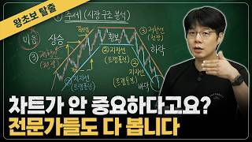
20:05주식입문 · 10주 완성 왕초보 탈출
차트 한번 안 보고 종목을 사고 계신가요..? 매수·매도 타이밍에 반드시 확인하는 세 가지 기준 | 왕초보 탈출 6탄
이효석아카데미
2026.09.02 · 조회수 15만 · 후기 48
30:50
주식입문 · 기초 강의 시리즈
"최고점에만 샀는데도 4억이 15억이 된다"... 99%가 못 하는 건 딱 하나였습니다 | 30분만에 끝내는 지수투자 총정리
이효석아카데미
2026.08.28 · 조회수 62만 · 후기 393
45:05
주식입문 · 10주 완성 왕초보 탈출
차트가 더 오를 것 같아서 따라 샀다면? 주가가 오른 게 아니라 값이 비싸진 순간을 구분하는 법 | 왕초보 탈출 5탄
이효석아카데미
2026.08.26 · 조회수 7.1만 · 후기 41
29:49
주식입문 · 기초 강의 시리즈
투자를 잘하려면 당신의 뇌부터 '이렇게' 만들어야 합니다
이효석아카데미
2026.08.22 · 조회수 7.4만 · 후기 71
27:41
재무제표 · 10주 완성 왕초보 탈출
"숫자 하나가 좋은 주식과 나쁜 주식을 가른다"...재무제표 9단어 총정리 [왕초보 탈출 4탄]
이효석아카데미
2026.08.19 · 조회수 4.7만 · 후기 86
19:55
ETF·연금 · 전인구의 연금술사
변동성 심한 주식형 연금계좌, 은퇴 전 안전하게 갈아타는 '연금 환승' 전략 (ft.김봉옥 이사)
전인구경제연구소
2026.08.17 · 조회수 1.0만 · 후기 9
35:41
미국주식 · 10주 완성 왕초보 탈출
S&P500·나스닥100, 처음 투자할 때 비중을 정하는 가장 쉬운 기준은 바로 '이것'입니다 | 왕초보 탈출 3탄
이효석아카데미
2026.08.12 · 조회수 17만 · 후기 168
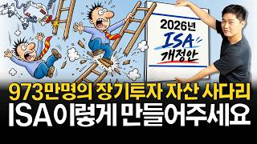
15:39ETF·연금 · 절세계좌 ┃ ISA·연금저축·IRP
ISA 개정안 이렇게 바꿔야 합니다. (To. 재정경제부)
수페TV
2026.08.11 · 조회수 3.3만 · 후기 281
16:50
ETF·연금 · 전인구의 연금술사
연금 수령 한도 1,500만 원의 치명적인 함정! 세전과 세후 꼭 확인하세요 (ft.김봉옥 이사)
전인구경제연구소
2026.08.08 · 조회수 1.0만 · 후기 15
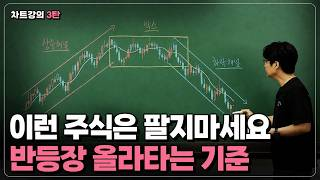
15:35주식입문 · 기초 강의 시리즈
지금 반등이 진짜인지 가짜인지, 코스피 차트로 확인하는 4가지 신호
이효석아카데미
2026.08.07 · 조회수 22만 · 후기 260
23:33
주식입문 · 10주 완성 왕초보 탈출
"재테크 고수들은 이미 다 하고 있어요 " 한 달에 100만원씩만 모아도 가장 빠르게 1억을 달성하는 방법 | 왕초보 탈출 2탄
이효석아카데미
2026.08.05 · 조회수 11만 · 후기 119
13:11
ETF·연금 · 기초 강의 시리즈
ISA 5년 만기 제한에 투자자들이 열받은 진짜 이유.10년 20년 불려갈 계획이 통째로 막혔습니다
이효석아카데미
2026.08.04 · 조회수 15만 · 후기 957
25:39
ETF·연금 · 전인구의 연금술사
정기예금 들었다가 건보료 폭탄? 은퇴자라면 반드시 알아야 할 금융소득 기준 (ft.연금박사 이영주 대표)
전인구경제연구소
2026.08.01 · 조회수 7.4만 · 후기 105
17:12
주식입문 · 기초 강의 시리즈
자녀 주식 계좌에선 '이 종목'만 죽어라 모아주시면 됩니다 20년뒤에 3억이 만들어집니다
이효석아카데미
2026.07.31 · 조회수 24만 · 후기 162
30:48
주식입문 · 10주 완성 왕초보 탈출
투자는 하루라도 빨리 시작해야 가만히 있어도 매년 녹아내리는 돈을 막을 수 있습니다 | 왕초보 탈출 1탄
이효석아카데미
2026.07.29 · 조회수 7.6만 · 후기 114
19:06
ETF·연금 · 전인구의 연금술사
월 30만 원으로 평생 월 100만 원 받는 연금의 비밀 (ft.연금박사 이영주 대표)
전인구경제연구소
2026.07.25 · 조회수 4,056 · 후기 1
14:39
주식입문 · 기초 강의 시리즈
월 19만원으로 우리 아이 20년 뒤 1억 4천 만드는 법
이효석아카데미
2026.07.23 · 조회수 4.9만 · 후기 41
23:08
주식입문 · 기초 강의 시리즈
SK하이닉스가 아무리 생각해도 저평가를 받는 것 같은 이유를 설명해보겠습니다
이효석아카데미
2026.07.20 · 조회수 7.4만 · 후기 131
40:45
주식입문 · 주린이 탈출! 주식투자 기초 강의
수급의 모든 것! 외인 기관 파헤치기 / 앉아서 부자되기 [EP.14] / 주린이 다 모여라!
와이스트릿
2026.07.18 · 조회수 2.3만 · 후기 15
12:55
ETF·연금 · 전인구의 연금술사
국민연금 임의가입 vs 개인연금, 전업주부에게 진짜 유리한 선택은? (ft.김봉옥 이사)
전인구경제연구소
2026.07.11 · 조회수 6,388 · 후기 5
7:21
ETF·연금 · 기초 강의 시리즈
연금저축계좌에서 국내 ETF 투자하면 안내도 될 '세금폭탄'이 날아옵니다
이효석아카데미
2026.07.10 · 조회수 28만 · 후기 290
21:37
ETF·연금 · 전인구의 연금술사
60대 은퇴자도 늦지 않았다! 목돈을 평생 월급으로 바꾸는 후기 연금 전략 (ft.김봉옥 이사)
전인구경제연구소
2026.07.04 · 조회수 4.6만 · 후기 27
19:24
ETF·연금 · 기초 강의 시리즈
자녀 계좌 개설의 정답은 일반계좌도, 연금저축 계좌도 아닙니다. 일단 무조건 빨리 만드셔야 합니다
이효석아카데미
2026.07.03 · 조회수 28만 · 후기 265
16:04
주식입문 · 주린이 탈출! 주식투자 기초 강의
정답 나왔다. 단타 vs 장투 / 앉아서 부자되기 [EP.13] / 주린이 다 모여라!
와이스트릿
2026.07.03 · 조회수 1.5만 · 후기 12
24:46
ETF·연금 · 전인구의 연금술사
연금 수령 중 사망하면 남은 돈은? (ft.연금박사 이영주 대표)
전인구경제연구소
2026.06.26 · 조회수 4.2만 · 후기 35
18:37
미국주식 · 기초 강의 시리즈
2,000만원 가진 초보 투자자라면, S&P500 투자 '이렇게' 하시면 끝입니다
이효석아카데미
2026.06.26 · 조회수 82만 · 후기 358
9:55
미국주식 · 왕초보주식투자
마삼룰을 알아보자(ft.나스닥 -3%)
전인구경제연구소
2026.06.23 · 조회수 13만 · 후기 295
28:05
ETF·연금 · 전인구의 연금술사
국민연금 수령 시기 고민 끝! 일찍 받는 조기수령 vs 늦춰 받는 연기연금 완벽 비교 (ft.연금박사 이영주 대표)
전인구경제연구소
2026.06.19 · 조회수 1.9만 · 후기 45
21:03
미국주식 · 기초 강의 시리즈
나스닥100 지금 사도 괜찮을까?
이효석아카데미
2026.06.19 · 조회수 24만 · 후기 248
27:20
주식입문 · 주린이 탈출! 주식투자 기초 강의
FOMO 겪고 2배 레버리지로 가려는 주린이들을 위한 멱살잡이 / 앉아서 부자되기 [EP.12] / 주린이 다 모여라!
와이스트릿
2026.06.17 · 조회수 9,832 · 후기 23
23:20
주식입문 · 기초 강의 시리즈
"뉴스가 읽히기 시작합니다" 금리와 주가, 딱 이 흐름만 잡으세요
이효석아카데미
2026.06.12 · 조회수 7.9만 · 후기 70
21:33
주식입문 · 기초 강의 시리즈
스페이스X 매수하기 전에 꼭 확인하세요! IPO의 모든 것
이효석아카데미
2026.06.11 · 조회수 5.2만 · 후기 56
13:39
주식입문 · 기초 강의 시리즈
수익 났는데 팔까요? 물렸는데 버틸까요? 초보자는 이 기준만 보세요
이효석아카데미
2026.06.06 · 조회수 46만 · 후기 215
13:51
ETF·연금 · 전인구의 연금술사
혼자 사는 싱글이라면 노후 준비, '이것' 모르면 평생 고생합니다 (ft.김봉옥 이사)
전인구경제연구소
2026.06.06 · 조회수 8,948 · 후기 13
22:23
주식입문 · 기초 강의 시리즈
1억 버는 치킨집을 10억에 사라고 하면 바보입니까? 근데 삼성전자는 지금 그 논리로 보면 역대급으로 싼 주식입니다
이효석아카데미
2026.05.29 · 조회수 6.9만 · 후기 92
18:24
ETF·연금 · 전인구의 연금술사
연금 계산 잘못하면 세금 폭탄 맞습니다 (ft.김봉옥 이사)
전인구경제연구소
2026.05.29 · 조회수 3.1만 · 후기 27
15:22
ETF·연금 · 기초 강의 시리즈
역대 최초 삼성전자·하이닉스 단일 종목 레버리지 ETF 출시, 수익률 갉아먹는 숨겨진 리스크 잡설없이 정리합니다
이효석아카데미
2026.05.26 · 조회수 9.5만 · 후기 79
10:54
주식입문 · 기초 강의 시리즈
주식 초보라면 꼭 봐야 합니다, 대한민국 1등, 삼성전자로 차트로 배우는 음봉과 양봉
이효석아카데미
2026.05.22 · 조회수 14만 · 후기 86
12:42
ETF·연금 · SolSol한 ETF
주도 테마별 코스닥 대표기업에 투자하는 SOL 코스닥TOP10 ETF가 나왔습니다(SOL 코스닥TOP10 ETF)
전인구경제연구소
2026.05.18 · 조회수 6,993 · 후기 7
35:51
주식입문 · 주린이 탈출! 주식투자 기초 강의
주식 물렸을 때 응급대처법! 3가지만 생각해보세요 / 앉아서 부자되기 [EP.11] / 주린이 다 모여라!
와이스트릿
2026.05.18 · 조회수 1.1만 · 후기 10
22:21
ETF·연금 · 전인구의 연금술사
연금 받을 때 1년에 1,500만 원 넘을까 걱정된다면 이렇게 하세요 (ft.연금박사 이영주 대표)
전인구경제연구소
2026.05.16 · 조회수 20만 · 후기 91
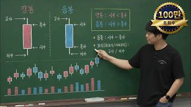
17:48주식입문 · 기초 강의 시리즈
초등학생도 이해하는 차트 기초 15분 정리
이효석아카데미
2026.05.15 · 조회수 119만 · 후기 288
17:00
ETF·연금 · 절세계좌 ┃ ISA·연금저축·IRP
국민성장펀드 연령·소득별 혜택 뜯어봤습니다. (연금저축, ISA 비교분석)
수페TV
2026.05.12 · 조회수 12만 · 후기 246
21:13
ETF·연금 · 전인구의 연금술사
프리랜서라 연금 준비가 막막하다면 이렇게 시작하세요 (ft.연금박사 이영주 대표)
전인구경제연구소
2026.05.09 · 조회수 3,986 · 후기 2
18:45
미국주식 · 기초 강의 시리즈
S&P500 투자 이렇게 하면 망합니다. 9가지 공통점
이효석아카데미
2026.05.09 · 조회수 48만 · 후기 360
10:34
ETF·연금 · [ISA] 누구나 갖고 있어야 할 만능계좌
🧐 ISA 만기자금을 꼭 연금계좌로 전환해야 하는 이유ㅣISA | 연금저축
박곰희TV
2026.05.08 · 조회수 15만 · 후기 472
2:07:34
ETF·연금 · 기초 강의 시리즈
무료로 다 알려준다고? ETF 총정리 안보면 진짜 손해입니다
이효석아카데미
2026.05.04 · 조회수 52만 · 후기 271
55:39
주식입문 · 기초 강의 시리즈
SK하이닉스 매수, 매도 하시기 전에 이 영상 꼭 보세요! 반도체 총정리 해드립니다
이효석아카데미
2026.05.03 · 조회수 9.6만 · 후기 65
10:39
주식입문 · 왕초보주식투자
주식 투자 하루만에 끝내기 8탄 주식 투자할 때 중요한 핵심 3가지
전인구경제연구소
2026.05.03 · 조회수 1.6만 · 후기 20
20:28
미국주식 · 기초 강의 시리즈
S&P500이 아무리 올라도 99%는 돈을 못버는 충격적인 이유가 있습니다
이효석아카데미
2026.05.02 · 조회수 29만 · 후기 350
17:52
ETF·연금 · 전인구의 연금술사
내 연금이 고민인 주부라면 톤틴연금으로 이렇게 준비하세요 (ft.김봉옥 이사)
전인구경제연구소
2026.05.02 · 조회수 6,399 · 후기 2
32:32
주식입문 · 왕초보주식투자
주식투자 하루 만에 끝내기 7탄 고수들 주식투자 기술 몰아보기
전인구경제연구소
2026.05.01 · 조회수 3.2만 · 후기 31
16:13
주식입문 · 기초 강의 시리즈
학원비 150만원 쓰는 동안 월 18만원으로 2억 만드는 부모들이 있다…자녀 자산 지금 시작해야 하는 이유
이효석아카데미
2026.04.30 · 조회수 26만 · 후기 852
13:15
주식입문 · 왕초보주식투자
주식투자 하루 만에 끝내기 6탄 좋은 주식 고르는 법
전인구경제연구소
2026.04.27 · 조회수 3.9만 · 후기 38
34:03
주식입문 · 주린이 탈출! 주식투자 기초 강의
차트가 제일 쉬운 이유...주린이를 위한 차트의 기초 [앉아서 부자되기 EP.10] / 주린이 다 모여라!
와이스트릿
2026.04.27 · 조회수 14만 · 후기 67
17:36
ETF·연금 · 기초 강의 시리즈
지금 반도체 ETF 못 고르고 있다면 20분만 집중하세요, 성향별 정답 ETF 완벽 정리해드립니다
이효석아카데미
2026.04.25 · 조회수 40만 · 후기 228
7:23
주식입문 · 왕초보주식투자
주식투자 하루 만에 끝내기 5탄 성장주 투자법
전인구경제연구소
2026.04.25 · 조회수 1.7만 · 후기 19
18:40
ETF·연금 · 전인구의 연금술사
노후 자금 1억 원으로 평생 연금을 준비하고 싶다면 이렇게 하세요 (ft.김봉옥 이사)
전인구경제연구소
2026.04.24 · 조회수 1.1만 · 후기 2
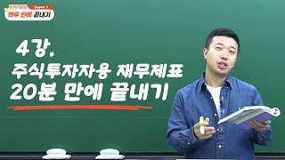
20:22재무제표 · 왕초보주식투자
주식투자 하루 만에 끝내기 4탄 주식투자자용 재무제표
전인구경제연구소
2026.04.20 · 조회수 2.8만 · 후기 32
23:13
미국주식 · 기초 강의 시리즈
S&P500이 폭락해도 사야 하는 이유, 20년 동안 손해 본 사람이 단 한 명도 없습니다
이효석아카데미
2026.04.17 · 조회수 31만 · 후기 324
16:25
ETF·연금 · SolSol한 ETF
우주산업 황금기, 뉴스페이스에 투자하자! SOL 미국우주항공TOP10 ETF가 나왔습니다 (SOL 미국우주항공TOP10 ETF)
전인구경제연구소
2026.04.16 · 조회수 1.1만 · 후기 7
27:28
주식입문 · 주린이 탈출! 주식투자 기초 강의
재물운 있는 사람들의 소름끼치는 공통점 [앉아서 부자되기 EP.9] / 주린이 다 모여라!
와이스트릿
2026.04.13 · 조회수 1.6만 · 후기 20
28:16
주식입문 · 왕초보주식투자
주식투자 하루 만에 끝내기 3탄 차트 보는 방법
전인구경제연구소
2026.04.12 · 조회수 15만 · 후기 523
39:58
주식입문 · 기초 강의 시리즈
40분에 끝내는 엔비디아. 매수 매도 고민 날려드립니다
이효석아카데미
2026.04.11 · 조회수 8.5만 · 후기 101
29:46
ETF·연금 · 전인구의 연금술사
4층 연금 전략으로 누구나 매달 500만 원 연금 받는 법 (ft.연금박사 이영주 대표)
전인구경제연구소
2026.04.10 · 조회수 1.2만 · 후기 12
16:36
주식입문 · 주린이 탈출! 주식투자 기초 강의
왜 내가 사기만 하면 주가가 떨어질까? 분명한 이유가 있습니다 [앉아서 부자되기 EP.8] / 주린이 다 모여라!
와이스트릿
2026.04.09 · 조회수 2.3만 · 후기 27
23:23
ETF·연금 · [ISA] 누구나 갖고 있어야 할 만능계좌
👀 ISA에서 미국배당주 사면 손해인가요? | 그럼에도 ISA를 해야 하는 이유 | 외국납부세액공제
박곰희TV
2026.04.08 · 조회수 24만 · 후기 328
48:21
주식입문 · 왕초보주식투자
주식투자 하루 만에 끝내기 2탄 주식투자 기초 용어 총정리
전인구경제연구소
2026.04.06 · 조회수 5.0만 · 후기 58
25:16
주식입문 · 주린이 탈출! 주식투자 기초 강의
떨어지는 주가가 무섭다면, 악재 속에서도 투자 잘하는 방법 [앉아서 부자되기 EP.7] / 주린이 다 모여라!
와이스트릿
2026.04.06 · 조회수 1.4만 · 후기 31
18:37
주식입문 · 왕초보주식투자
주식투자 하루 만에 끝내기 1탄 주식투자를 왜 해야 되는가?
전인구경제연구소
2026.04.03 · 조회수 6.5만 · 후기 144
29:28
ETF·연금 · 전인구의 연금술사
노후 건강보험료가 부담스럽다면 이렇게 해결하세요 (ft.연금박사 이영주 대표)
전인구경제연구소
2026.03.31 · 조회수 3.7만 · 후기 29
28:52
ETF·연금 · [ISA] 누구나 갖고 있어야 할 만능계좌
📊 ISA 혹시 나만 하고 있는 건 아니겠지?ㅣ통계자료ㅣ금융투자협회 | ver.2026
박곰희TV
2026.03.31 · 조회수 5.7만 · 후기 93
39:16
주식입문 · 기초 강의 시리즈
40분에 끝내는 삼성전자. 매수 매도 고민 날려드립니다
이효석아카데미
2026.03.28 · 조회수 15만 · 후기 120
26:26
주식입문 · 주린이 탈출! 주식투자 기초 강의
금리, 이보다 쉬울 수 없다! 초등학생부터 할머니까지 누구나 이해하는 금리 [주린이 EP.6]
와이스트릿
2026.03.23 · 조회수 6,797 · 후기 15
37:47
ETF·연금 · [ISA] 누구나 갖고 있어야 할 만능계좌
💡 투자금이 많을 때, 절세계좌 3개 나눠서 투자하는 방법 | 월300만원부터 1,000만원까지 | 절세꿀팁 | 2편
박곰희TV
2026.03.20 · 조회수 6.3만 · 후기 154
15:29
주식입문 · 주린이 탈출! 주식투자 기초 강의
이때만큼은 무조건 다 팔고 도망 가라는 이유 [주린이 EP.5]
와이스트릿
2026.03.18 · 조회수 1.6만 · 후기 15
40:47
ETF·연금 · [ISA] 누구나 갖고 있어야 할 만능계좌
💡 투자금이 작을 때, 절세계좌 3개 나눠서 투자하는 방법 | 월10만원부터 200만원으로 투자하기 | 1편
박곰희TV
2026.03.18 · 조회수 15만 · 후기 194
29:34
ETF·연금 · [ISA] 누구나 갖고 있어야 할 만능계좌
🤔 ISA 개설은 어느 증권사가 좋을까?ㅣISA 10주년 이벤트 | 빠꼼한짠테크ㅣ2026년3월
박곰희TV
2026.03.15 · 조회수 9.8만 · 후기 181
13:26
ETF·연금 · SolSol한 ETF
삼성전자 + SK하이닉스·SK스퀘어 담은 ETF 등장! 압도적 비중으로 담았습니다! (ft. SOL AI반도체TOP2플러스ETF)
전인구경제연구소
2026.03.12 · 조회수 1.5만 · 후기 24
17:06
ETF·연금 · 기초 강의 시리즈
이것만 알아도 초고수 됩니다 극소수만 알고있는 ETF의 비밀
이효석아카데미
2026.03.06 · 조회수 9.8만 · 후기 68
17:22
ETF·연금 · 기초 강의 시리즈
국장 뜨겁다 뜨거워! 고공행진 코스피 ETF는 그냥 이거 사세요
이효석아카데미
2026.02.26 · 조회수 37만 · 후기 151
18:08
주식입문 · 주린이 탈출! 주식투자 기초 강의
돈 푸는 나라와 좋은 주식 [주린이 EP.4]
와이스트릿
2026.02.23 · 조회수 4,221 · 후기 6
22:53
주식입문 · 주린이 탈출! 주식투자 기초 강의
주식 매도 타이밍. 한번에 정리해드립니다 [주린이 EP.3]
와이스트릿
2026.02.18 · 조회수 2.6만 · 후기 24
30:42
주식입문 · 기초 강의 시리즈
섹터 종목 다 찝어드릴게요 AI 데이터 센터 기초 완전 정복
이효석아카데미
2026.02.17 · 조회수 8.3만 · 후기 102
2:49:27
주식입문 · 기초 강의 시리즈
왕초보를 위한 주식 기초용어 총정리
이효석아카데미
2026.02.14 · 조회수 41만 · 후기 194
21:40
주식입문 · 주린이 탈출! 주식투자 기초 강의
주린이 99%가 시작부터 하는 실수 [주린이 EP.2]
와이스트릿
2026.02.13 · 조회수 8,196 · 후기 15
38:46
주식입문 · 기초 강의 시리즈
삼전, 하닉 파시려고요? 이 특강 보시면 반도체 주식 매도 버튼이 뽑혀버릴 겁니다
이효석아카데미
2026.02.06 · 조회수 15만 · 후기 218
34:53
ETF·연금 · 기초 강의 시리즈
30분만 집중해보세요 ETF 전문가로 만들어 드립니다!
이효석아카데미
2026.01.30 · 조회수 103만 · 후기 218
1:37:08
주식입문 · 기초 강의 시리즈
주린이 탈출시켜 드립니다! 100분으로 끝내는 주식 기초! 총정리 [주린이 탈출하기 1탄]
이효석아카데미
2026.01.23 · 조회수 58만 · 후기 193
19:05
주식입문 · 주린이 탈출! 주식투자 기초 강의
코스피 5천 시대! 주린이를 위한 영상 주린이 벗어나기! 주식투자 기초강의 또 한번의 시작! [주린이 EP.1]
와이스트릿
2026.01.19 · 조회수 8,578 · 후기 29
39:01
미국주식 · START ┃금융 기초
39분 만에 미국주식 고수가 되실 겁니다. (ft. 연령별 포트폴리오)
수페TV
2026.01.13 · 조회수 26만 · 후기 664
20:44
ETF·연금 · SolSol한 ETF
이 ETF만 있으면 배당으로 평생 현금흐름 만들 수 있습니다(SOL 배당성향탑픽액티브 ETF)
전인구경제연구소
2026.01.09 · 조회수 3.2만 · 후기 24
21:52
ETF·연금 · START ┃금융 기초
ISA·연금·직투 계좌 선택은 이렇게 합니다!
수페TV
2026.01.06 · 조회수 15만 · 후기 241
9:37
ETF·연금 · [ISA] 누구나 갖고 있어야 할 만능계좌
💪🏻 자산관리의 기본인 ISA부터 노후 준비까지! | 연금저축 & ISAㅣ이벤트혜택ㅣ한국투자증권 | 🎁푸짐한 댓글이벤트 있어요!
박곰희TV
2025.12.23 · 조회수 8.9만 · 후기 2,601
25:44
ETF·연금 · START ┃금융 기초
2026년 ISA·연금저축·IRP에 꼭 모아가세요! (ft. 미국ETF 리스트 무료나눔)
수페TV
2025.12.23 · 조회수 25만 · 후기 390
47:51
ETF·연금 · [연금시리즈] 연금만 A부터 Z까지!!
☂️ 연금에서 박곰희포트 따라하기 | 깻잎's 연금포트 변경 | 연금시리즈 깜짝 방문
박곰희TV
2025.12.21 · 조회수 30만 · 후기 482
21:43
ETF·연금 · SolSol한 ETF
슈퍼 사이클에 진입한 주도주 SOL 조선기자재 ETF가 나왔습니다(SOL 조선기자재 ETF)
전인구경제연구소
2025.12.10 · 조회수 5,491 · 후기 5
21:36
ETF·연금 · SolSol한 ETF
똑똑한 노후 준비 시작하자! SOL 연금 계좌 시리즈 ETF알려드립니다! (ft.SOL 연금 계좌 시리즈 ETF)
전인구경제연구소
2025.12.08 · 조회수 5,095 · 후기 3
33:54
ETF·연금 · [ISA] 누구나 갖고 있어야 할 만능계좌
👩🏻🔧 2000만원으로 ISA 월배당 포트폴리오 따라하기 | 월배당 포트폴리오ㅣ깻포트 점검 | 깻잎일기
박곰희TV
2025.11.27 · 조회수 38만 · 후기 243
15:17
ETF·연금 · ETF
돌아오는 연말정산 시즌 148만원 환급 놓치지 마세요!ㅣ한나 ETF
이효석아카데미
2025.11.21 · 조회수 7,455 · 후기 6
26:47
ETF·연금 · SolSol한 ETF
중국의 고성장 속 투자 기회! 차이나소비트렌드 ETF가 나왔습니다 (ft. SOL 차이나소비트렌드 ETF)
전인구경제연구소
2025.11.21 · 조회수 9,655 · 후기 21
20:34
ETF·연금 · 절세계좌 ┃ ISA·연금저축·IRP
ISA 해지→연금전환 꼭 해야할까? (ft. 10년 투자로 월 726만원 받는 법)
수페TV
2025.11.18 · 조회수 28만 · 후기 588
6:43
ETF·연금 · ETF
코스피 대투자의 시대 지금이라도 '이거' 사세요 [한나 ETF]
이효석아카데미
2025.10.31 · 조회수 3.5만 · 후기 30
14:46
ETF·연금 · [ISA] 누구나 갖고 있어야 할 만능계좌
🧑🏻🎓 대학생 자녀 계좌는 ISA 할까요, 연금저축 할까요?ㅣ구독자사연 | 댓글챌린지
박곰희TV
2025.10.30 · 조회수 4.8만 · 후기 91
24:20
ETF·연금 · [ISA] 누구나 갖고 있어야 할 만능계좌
🥳 ISA 만기해지하고, 연금전환 하려고 합니다~!ㅣISA | 연금저축
박곰희TV
2025.10.28 · 조회수 46만 · 후기 509
17:26
ETF·연금 · SolSol한 ETF
G2 패권 전쟁 시대의 미국 주식 투자, 미국넥스트테크TOP10 ETF가 나왔습니다(ft.SOL미국넥스트테크TOP10 ETF)
전인구경제연구소
2025.10.23 · 조회수 1.5만 · 후기 23
19:28
ETF·연금 · 절세계좌 ┃ ISA·연금저축·IRP
비과세 고배당주? ISA에 담을 국내 ETF+수혜주
수페TV
2025.10.14 · 조회수 15만 · 후기 160
2:34:11
ETF·연금 · [ISA] 누구나 갖고 있어야 할 만능계좌
🌕 추석특집 "ISA활용법 몰아보기" | ISA | 채권 | ELB | 배당주 | ISA만기
박곰희TV
2025.10.08 · 조회수 9.9만 · 후기 55
8:31
ETF·연금 · ETF
배당주 뭐 살지 고민이시면 배당ETF로 싹 담으세요 [한나 ETF]
이효석아카데미
2025.09.30 · 조회수 2.8만 · 후기 27
9:58
ETF·연금 · ETF
SK하이닉스, 삼성전자 막차 놓치신 분들 필수 시청! [한나 ETF]
이효석아카데미
2025.09.17 · 조회수 2.3만 · 후기 12
30:19
ETF·연금 · [ISA] 누구나 갖고 있어야 할 만능계좌
🚨 ISA 만기되면 어디로 보내요?ㅣ개인종합자산관리계좌ㅣISA | 내용정정
박곰희TV
2025.08.24 · 조회수 32만 · 후기 900
6:24
주식입문 · [쌩초보반] 투자를 시작하는 쌩초보를 위한 기초지식
🧑🏻🏫 46강 - 공모주 투자ㅣ쌩초보반 무료공유ㅣ🏫곰희스쿨
박곰희TV
2025.08.10 · 조회수 1.9만 · 후기 40
16:07
주식입문 · [쌩초보반] 투자를 시작하는 쌩초보를 위한 기초지식
🧑🏻🏫 45강 - 공모주 청약절차ㅣ쌩초보반 무료공유ㅣ🏫곰희스쿨
박곰희TV
2025.08.10 · 조회수 3.7만 · 후기 9
22:28
ETF·연금 · [연금시리즈] 연금만 A부터 Z까지!!
☂️ 정년퇴직 앞둔 60세, 지금 연금저축을 연다면?ㅣ연금시리즈 진짜 마지막편 (feat.노후 고민상담🙋)
박곰희TV
2025.08.08 · 조회수 23만 · 후기 248
23:23
ETF·연금 · [연금시리즈] 연금만 A부터 Z까지!!
☂️ 연금 수령은 어떻게 하면 돼요?ㅣ연금시리즈 21편 | 마지막편👋🏻
박곰희TV
2025.08.07 · 조회수 6.8만 · 후기 57
21:17
ETF·연금 · [ISA] 누구나 갖고 있어야 할 만능계좌
🤔 ISA를 할까? 연금저축을 할까?ㅣISA, 연금저축 비교ㅣ2025년리뉴얼
박곰희TV
2025.07.28 · 조회수 146만 · 후기 940
10:11
미국주식 · 해외투자
태국과 캄보디아가 전쟁을 하는 이유(ft.카지노 전쟁)
전인구경제연구소
2025.07.26 · 조회수 13만 · 후기 156
11:19
주식입문 · [쌩초보반] 투자를 시작하는 쌩초보를 위한 기초지식
🧑🏻🏫 44강 - 공모주ㅣ쌩초보반 무료공유ㅣ🏫곰희스쿨
박곰희TV
2025.07.12 · 조회수 1.9만 · 후기 10
8:39
주식입문 · [쌩초보반] 투자를 시작하는 쌩초보를 위한 기초지식
🧑🏻🏫 43강 - 배당주&우선주ㅣ쌩초보반 무료공유ㅣ🏫곰희스쿨
박곰희TV
2025.07.12 · 조회수 2.9만 · 후기 12
14:27
주식입문 · 신혼부부 재테크
영유 보낼까 말까 고민된다면! 극사실 영유 2년 후기
구채희
2025.07.04 · 조회수 1.5만 · 후기 16
2:22:24
재무제표 · 주린이 탈출! 주식투자 기초 강의
기업분석 재무제표가 어렵다면 딱 여기서 2시간만 버텨보세요 / 주식 초보 주린이 탈출을 위한 주식투자 기초 강의 / 글로리아
와이스트릿
2025.07.02 · 조회수 43만 · 후기 468
1:58:17
주식입문 · 주린이 탈출! 주식투자 기초 강의
2시간만에 주린이 탈출...주식투자 기초 완전 마스터 (18만원 상당의 선물까지!) / 주식투자 기초강의 / 이대호 와이스트릿 대표
와이스트릿
2025.06.28 · 조회수 185만 · 후기 1,358
39:02
ETF·연금 · [ISA] 누구나 갖고 있어야 할 만능계좌
💁🏻♀️ISA에서 배당주 사는 좋은 방법 ㅣPLUS 고배당주 | ISA 활용법
박곰희TV
2025.06.23 · 조회수 57만 · 후기 323
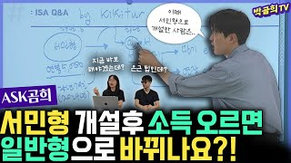
28:16ETF·연금 · [ISA] 누구나 갖고 있어야 할 만능계좌
❓ ISA 서민형 개설했는데, 소득 오르면 일반형 되나요?ㅣASK곰희
박곰희TV
2025.06.11 · 조회수 3.8만 · 후기 61
10:20
주식입문 · [쌩초보반] 투자를 시작하는 쌩초보를 위한 기초지식
🧑🏻🏫 42강 - 워렌버핏 어록ㅣ쌩초보반 무료공유ㅣ🏫곰희스쿨
박곰희TV
2025.06.11 · 조회수 4.2만 · 후기 19
37:55
ETF·연금 · [연금시리즈] 연금만 A부터 Z까지!!
☂️ 연금에서 마이너스가 나면? ㅣ연금시리즈 20편 | 연금 중간점검
박곰희TV
2025.06.08 · 조회수 14만 · 후기 77
33:29
ETF·연금 · [ISA] 누구나 갖고 있어야 할 만능계좌
🚨 ISA 만기됐는데, 그냥 두면 큰일난다고요?ㅣ개인종합자산관리계좌ㅣISA
박곰희TV
2025.05.27 · 조회수 74만 · 후기 625
19:13
ETF·연금 · SolSol한 ETF
AI 발전엔 원자력 필수입니다! 미국 SMR 원자력 ETF가 나왔습니다(ft. 미국 SMR 원자력 ETF)
전인구경제연구소
2025.05.19 · 조회수 3.3만 · 후기 121
11:26
주식입문 · [쌩초보반] 투자를 시작하는 쌩초보를 위한 기초지식
🧑🏻🏫 41강 - 주식투자 성공한 사례들ㅣ쌩초보반 무료공유ㅣ🏫곰희스쿨
박곰희TV
2025.05.13 · 조회수 3.5만 · 후기 14
33:57
ETF·연금 · [ISA] 누구나 갖고 있어야 할 만능계좌
❓ ISA는 무조건 3년마다 해지해야 하나요?ㅣASK곰희
박곰희TV
2025.05.07 · 조회수 86만 · 후기 802
6:23:24
미국주식 · 해외투자
Warren Buffett presides over the 2025 Berkshire Hathaway annual shareholder meeting — 5/3/25
전인구경제연구소
2025.05.03 · 조회수 81만 · 후기 399
17:14
주식입문 · [쌩초보반] 투자를 시작하는 쌩초보를 위한 기초지식
🧑🏻🏫 40강 - 주식투자법ㅣ쌩초보반 무료공유ㅣ🏫곰희스쿨
박곰희TV
2025.04.23 · 조회수 6.0만 · 후기 15
34:06
ETF·연금 · [연금시리즈] 연금만 A부터 Z까지!!
☂️ 연금계좌 투자전략 정해드릴게요 ㅣ연금시리즈 19편ㅣ연금계좌 투자전략
박곰희TV
2025.04.04 · 조회수 34만 · 후기 318
11:15
주식입문 · [쌩초보반] 투자를 시작하는 쌩초보를 위한 기초지식
🧑🏻🏫 39강 - 주식의 종류ㅣ쌩초보반 무료공유ㅣ🏫곰희스쿨
박곰희TV
2025.03.23 · 조회수 5.9만 · 후기 17
45:25
ETF·연금 · [ISA] 누구나 갖고 있어야 할 만능계좌
💁🏻♀️ISA에서 ELB 사는 좋은 방법 ㅣ ELB와 ELS | ISA 활용법
박곰희TV
2025.03.20 · 조회수 4.8만 · 후기 51
37:44
ETF·연금 · [ISA] 누구나 갖고 있어야 할 만능계좌
💁🏻♀️ ISA와 채권은 최고의 궁합입니다! | ISA에서 채권 사는 방법ㅣ개별채권 or 채권ETF | ISA 활용법
박곰희TV
2025.03.16 · 조회수 36만 · 후기 134
24:51
ETF·연금 · [연금시리즈] 연금만 A부터 Z까지!!
☂️ 연금저축 600만원 넣은 첫해 연말정산의 결과는?ㅣ연금시리즈 18편ㅣ연말정산결과
박곰희TV
2025.03.13 · 조회수 8.6만 · 후기 113
43:02
ETF·연금 · [연금시리즈] 연금만 A부터 Z까지!!
☂️ 연금저축 혹시 나만 하고 있는 거 아니겠지?ㅣ연금시리즈 17편ㅣ연금통계
박곰희TV
2025.03.09 · 조회수 6.6만 · 후기 79
6:53
주식입문 · [쌩초보반] 투자를 시작하는 쌩초보를 위한 기초지식
🧑🏻🏫 38강 - 주식 차트 보는 법ㅣ쌩초보반 무료공유ㅣ🏫곰희스쿨
박곰희TV
2025.03.09 · 조회수 11만 · 후기 30
21:50
ETF·연금 · SolSol한 ETF
금과 배당투자를 한 번에! 월배당 주는 금이 왔다.(ft.SOL골드커버드콜액티브)
전인구경제연구소
2025.03.07 · 조회수 1.8만 · 후기 49
11:44
주식입문 · [쌩초보반] 투자를 시작하는 쌩초보를 위한 기초지식
🧑🏻🏫 37강 - 유상증자,무상증자ㅣ쌩초보반 무료공유ㅣ🏫곰희스쿨
박곰희TV
2025.02.27 · 조회수 6.7만 · 후기 18
29:54
ETF·연금 · [ISA] 누구나 갖고 있어야 할 만능계좌
🤔 ISA 개설은 어느 증권사가 좋을까?ㅣ빠꼼한짠테크ㅣ2025년2월
박곰희TV
2025.02.24 · 조회수 9.0만 · 후기 89
7:02
주식입문 · [쌩초보반] 투자를 시작하는 쌩초보를 위한 기초지식
🧑🏻🏫 36강 - 액면분할ㅣ쌩초보반 무료공유ㅣ🏫곰희스쿨
박곰희TV
2025.02.19 · 조회수 4.6만 · 후기 20
13:39
주식입문 · 신혼부부 재테크
1억 모으기 위해 생활비에서 삭제한 4가지
구채희
2025.02.14 · 조회수 4.0만 · 후기 30
17:24
주식입문 · 신혼부부 재테크
집값 폭락한 송도, 3년 존버한 결과..! 오션뷰 아파트 사전점검 vlog
구채희
2025.02.08 · 조회수 3.2만 · 후기 52
9:22
주식입문 · [쌩초보반] 투자를 시작하는 쌩초보를 위한 기초지식
🧑🏻🏫 35강 - 서킷브레이커ㅣ쌩초보반 무료공유ㅣ🏫곰희스쿨
박곰희TV
2025.02.05 · 조회수 5.9만 · 후기 43
11:25
주식입문 · 신혼부부 재테크
비과세 증여 5년 후기! 원금 3배로 불린 방법 3가지
구채희
2025.01.30 · 조회수 1.7만 · 후기 37
21:09
주식입문 · 신혼부부 재테크
내생에 50평대 오션뷰는 처음이야...🫶 세번째 내집마련?! 사전점검 브이로그
구채희
2025.01.24 · 조회수 2.0만 · 후기 38
15:24
주식입문 · [쌩초보반] 투자를 시작하는 쌩초보를 위한 기초지식
🧑🏻🏫 34강 - 주식의 거래절차ㅣ쌩초보반 무료공유ㅣ🏫곰희스쿨
박곰희TV
2025.01.22 · 조회수 6.1만 · 후기 29
18:28
ETF·연금 · SolSol한 ETF
미국시장에서 주목받는 K-화장품 ETF가 나왔습니다!(ft.SOL 화장품TOP3플러스)
전인구경제연구소
2025.01.21 · 조회수 9,138 · 후기 3
15:13
주식입문 · 신혼부부 재테크
짠순이 아님 주의★ 1억 모으는 3인가족 한달 생활비 예산 공개!
구채희
2025.01.14 · 조회수 2.5만 · 후기 51
14:05
주식입문 · 신혼부부 재테크
딱 정해줄게! 월소득 1천만원 이하, 1억 모을 때 생활비 플랜
구채희
2025.01.01 · 조회수 5.3만 · 후기 77
12:55
주식입문 · [쌩초보반] 투자를 시작하는 쌩초보를 위한 기초지식
🧑🏻🏫 33강 - 테마주 투자방법ㅣ쌩초보반 무료공유ㅣ🏫곰희스쿨
박곰희TV
2024.12.27 · 조회수 4.7만 · 후기 20
14:34
주식입문 · 신혼부부 재테크
떠먹여 주는데 왜 안함?? 1억 모으기 이 영상으로 종결!
구채희
2024.12.26 · 조회수 9.5만 · 후기 211
21:32
ETF·연금 · 절세계좌 ┃ ISA·연금저축·IRP
S&P500 vs SCHD, 저는 여기에 투자합니다! (ft. 연금저축, ISA)
수페TV
2024.12.24 · 조회수 22만 · 후기 305
8:04
주식입문 · [쌩초보반] 투자를 시작하는 쌩초보를 위한 기초지식
🧑🏻🏫 32강 - 주식의 거래원칙ㅣ쌩초보반 무료공유ㅣ🏫곰희스쿨
박곰희TV
2024.12.13 · 조회수 5.5만 · 후기 13
15:24
주식입문 · 신혼부부 재테크
매년 1억씩 모으는 갓생 워킹맘 돈 관리 치트키 공개 (with 람지언니)
구채희
2024.12.09 · 조회수 1.9만 · 후기 25
14:25
주식입문 · 신혼부부 재테크
아직 안 늦었어요! 12월에 챙겨야 할 연말정산 필수통장 3가지
구채희
2024.11.30 · 조회수 1.5만 · 후기 82
12:52
주식입문 · [쌩초보반] 투자를 시작하는 쌩초보를 위한 기초지식
🧑🏻🏫 31강 - 주식의 가격ㅣ쌩초보반 무료공유ㅣ🏫곰희스쿨
박곰희TV
2024.11.28 · 조회수 6.5만 · 후기 15
19:00
ETF·연금 · SolSol한 ETF
AI 시대! 전력인프라는 필수입니다(ft.SOL 미국AI전력인프라)
전인구경제연구소
2024.11.26 · 조회수 1.9만 · 후기 13
22:17
ETF·연금 · SolSol한 ETF
절세계좌에는 이 ETF는 꼭 사모으세요(ft미국S&P500엔화노출(H) ETF, SOL CD금리&머니마켓액티브 ETF)
전인구경제연구소
2024.11.23 · 조회수 1.7만 · 후기 11
25:19
ETF·연금 · [연금시리즈] 연금만 A부터 Z까지!!
☂️ 연금저축 계좌에서 포트폴리오 짜기ㅣ연금시리즈 16편ㅣETF 매수하기
박곰희TV
2024.11.19 · 조회수 12만 · 후기 94
17:35
ETF·연금 · [연금시리즈] 연금만 A부터 Z까지!!
☂️ 연금저축 계좌 어떻게 만들어요?ㅣ연금시리즈 15편ㅣ연금계좌 한투로 개설하기
박곰희TV
2024.11.17 · 조회수 26만 · 후기 116
11:28
주식입문 · [쌩초보반] 투자를 시작하는 쌩초보를 위한 기초지식
🧑🏻🏫 30강 - 주식이란?ㅣ쌩초보반 무료공유ㅣ🏫곰희스쿨
박곰희TV
2024.10.30 · 조회수 6.9만 · 후기 22
26:41
ETF·연금 · [연금시리즈] 연금만 A부터 Z까지!!
☂️ 연금저축 계좌 어디서 열어요?ㅣ연금시리즈 14편ㅣ연금계좌 개설하기
박곰희TV
2024.10.23 · 조회수 10만 · 후기 106
19:20
ETF·연금 · [ISA] 누구나 갖고 있어야 할 만능계좌
🦾 ISA는 누구나 갖고 있어야 할 비과세만능계좌입니다ㅣ개인종합자산관리계좌ㅣISA 사용설명서 | 2024년리뉴얼
박곰희TV
2024.10.21 · 조회수 75만 · 후기 690
12:38
ETF·연금 · SolSol한 ETF
커버드콜 전략의 진화, 자본 수익과 인컴 수익을 모두 추구할 수 있는 ETF!(ft.solsol한 ETF)
전인구경제연구소
2024.10.21 · 조회수 6,642 · 후기 4
10:06
주식입문 · [쌩초보반] 투자를 시작하는 쌩초보를 위한 기초지식
🧑🏻🏫 29강 - 나는 테마투자자? 가치투자자?ㅣ쌩초보반 무료공유ㅣ🏫곰희스쿨
박곰희TV
2024.10.01 · 조회수 5.0만 · 후기 18
24:19
ETF·연금 · SolSol한 ETF
전 세계가 주목하는 K방산 ETF가 나왔습니다(SOL K방산 ETF)
전인구경제연구소
2024.09.30 · 조회수 1.0만 · 후기 16
8:42
주식입문 · 신혼부부 재테크
"깨닫는 데 5년 걸렸어요" 시간을 돈으로 바꾸는 방법!
구채희
2024.09.28 · 조회수 1.5만 · 후기 21
11:43
주식입문 · [쌩초보반] 투자를 시작하는 쌩초보를 위한 기초지식
🧑🏻🏫 28강 - 복리의 마법 72의 법칙ㅣ쌩초보반 무료공유ㅣ🏫곰희스쿨
박곰희TV
2024.09.14 · 조회수 6.4만 · 후기 12
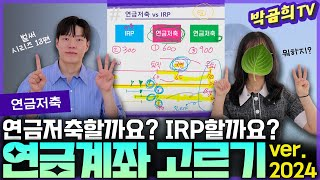
51:03ETF·연금 · [연금시리즈] 연금만 A부터 Z까지!!
☂️ 연금저축 열어요? IRP 열어요?ㅣ연금시리즈 13편ㅣ연금계좌 선택하기
박곰희TV
2024.09.08 · 조회수 16만 · 후기 119
8:17
주식입문 · [쌩초보반] 투자를 시작하는 쌩초보를 위한 기초지식
🧑🏻🏫 27강 - 캔들차트 보는 법ㅣ쌩초보반 무료공유ㅣ🏫곰희스쿨
박곰희TV
2024.09.02 · 조회수 5.5만 · 후기 20
36:05
ETF·연금 · [연금시리즈] 연금만 A부터 Z까지!!
☂️ 산업을 잘 골라야 연금을 오래오래~ 섹터 ETF 총정리ㅣ연금시리즈 12편ㅣ섹터정리 두번째
박곰희TV
2024.08.26 · 조회수 2.6만 · 후기 21
27:36
ETF·연금 · [연금시리즈] 연금만 A부터 Z까지!!
☂️ 연금에서 주식 살 때는 바로 이것! 섹터 ETF 총정리ㅣ연금시리즈 11편ㅣ섹터정리
박곰희TV
2024.08.26 · 조회수 4.4만 · 후기 25
13:41
주식입문 · [쌩초보반] 투자를 시작하는 쌩초보를 위한 기초지식
🧑🏻🏫 26강 - 기업이 탄생해서 상장하기까지ㅣ쌩초보반 무료공유ㅣ🏫곰희스쿨
박곰희TV
2024.08.20 · 조회수 4.3만 · 후기 12
10:51
주식입문 · [쌩초보반] 투자를 시작하는 쌩초보를 위한 기초지식
🧑🏻🏫 25강 - 자본주의 시장을 지켜주는 유관기관들ㅣ쌩초보반 무료공유ㅣ🏫곰희스쿨
박곰희TV
2024.08.14 · 조회수 5.5만 · 후기 14
9:40
주식입문 · [쌩초보반] 투자를 시작하는 쌩초보를 위한 기초지식
🧑🏻🏫 24강 - 거래소에 있는 다양한 시장들ㅣ쌩초보반 무료공유ㅣ🏫곰희스쿨
박곰희TV
2024.08.06 · 조회수 6.4만 · 후기 14
9:32
주식입문 · [쌩초보반] 투자를 시작하는 쌩초보를 위한 기초지식
🧑🏻🏫 23강 - 소비를 줄이는 이유는 자산을 사기 위한 것ㅣ쌩초보반 무료공유ㅣ🏫곰희스쿨
박곰희TV
2024.07.31 · 조회수 4.9만 · 후기 25
9:04
주식입문 · [쌩초보반] 투자를 시작하는 쌩초보를 위한 기초지식
🧑🏻🏫 22강 - 투자업계에 있는 다양한 직업들ㅣ쌩초보반 무료공유ㅣ🏫곰희스쿨
박곰희TV
2024.07.24 · 조회수 7.1만 · 후기 18
23:16
ETF·연금 · 절세계좌 ┃ ISA·연금저축·IRP
만능통장 ISA, 저는 이렇게 투자합니다!
수페TV
2024.07.23 · 조회수 24만 · 후기 406
21:41
ETF·연금 · [연금시리즈] 연금만 A부터 Z까지!!
☂️ 주식을 이해하고 있다면? 바로 이것!ㅣ연금시리즈 10편ㅣ연금운용ㅣ주식&가치투자 (+댓글이벤트도 있어요)
박곰희TV
2024.07.22 · 조회수 5.9만 · 후기 272
21:06
ETF·연금 · [연금시리즈] 연금만 A부터 Z까지!!
☂️ 자산배분의 단단함을 원한다면? 바로 이것!ㅣ연금시리즈 9편ㅣ연금운용ㅣ자산배분&TDF
박곰희TV
2024.07.22 · 조회수 8.6만 · 후기 49
13:29
ETF·연금 · [연금시리즈] 연금만 A부터 Z까지!!
☂️ 연금운용의 시작은 MMF와 금리형ETFㅣ연금시리즈 8편ㅣ연금운용
박곰희TV
2024.07.22 · 조회수 8.5만 · 후기 53
13:17
ETF·연금 · [연금시리즈] 연금만 A부터 Z까지!!
☂️ 연금 열었으면 가만히 두지말고 꼭 운용을 해야 합니다ㅣ연금시리즈 7편ㅣ연금운용
박곰희TV
2024.07.22 · 조회수 6.8만 · 후기 45
8:54
주식입문 · [쌩초보반] 투자를 시작하는 쌩초보를 위한 기초지식
🧑🏻🏫 21강 - 우리에게 생소한 투자 용어들ㅣ쌩초보반 무료공유ㅣ🏫곰희스쿨
박곰희TV
2024.07.16 · 조회수 6.2만 · 후기 20
12:42
ETF·연금 · [쌩초보반] 투자를 시작하는 쌩초보를 위한 기초지식
🧑🏻🏫 20강 - 노후준비를 위한 연금저축펀드ㅣ쌩초보반 무료공유ㅣ🏫곰희스쿨
박곰희TV
2024.07.15 · 조회수 13만 · 후기 71
17:27
ETF·연금 · [ISA] 누구나 갖고 있어야 할 만능계좌
🧑🏻🏫 19강 - 투자를 위한 메인계좌 ISAㅣ쌩초보반 무료공유ㅣ🏫곰희스쿨
박곰희TV
2024.07.12 · 조회수 16만 · 후기 77
26:45
주식입문 · [쌩초보반] 투자를 시작하는 쌩초보를 위한 기초지식
🧑🏻🏫 18강 - 현금관리를 위한 CMA 개설하기ㅣ쌩초보반 무료공유ㅣ🏫곰희스쿨
박곰희TV
2024.07.10 · 조회수 24만 · 후기 82
12:17
주식입문 · [쌩초보반] 투자를 시작하는 쌩초보를 위한 기초지식
🧑🏻🏫 17강 - '아는 투자'와 '역발상 투자'ㅣ쌩초보반 무료공유ㅣ🏫곰희스쿨
박곰희TV
2024.07.06 · 조회수 6.5만 · 후기 30
17:18
ETF·연금 · 절세계좌 ┃ ISA·연금저축·IRP
ISA계좌 200% 활용법 반드시 확인하세요!
수페TV
2024.07.02 · 조회수 21만 · 후기 559
12:37
주식입문 · [쌩초보반] 투자를 시작하는 쌩초보를 위한 기초지식
🧑🏻🏫 16강 - '저비용투자'를 해야하는 이유ㅣ쌩초보반 무료공유ㅣ🏫곰희스쿨
박곰희TV
2024.06.29 · 조회수 7.0만 · 후기 16
20:00
ETF·연금 · SolSol한 ETF
배당의 선두주자! 금융지주플러고배당 ETF로 투자하세요(ft.solsol한 ETF)
전인구경제연구소
2024.06.22 · 조회수 2.4만 · 후기 20
18:14
ETF·연금 · 절세계좌 ┃ ISA·연금저축·IRP
(광고X) ISA계좌 당장 이렇게 바꾸세요!
수페TV
2024.06.11 · 조회수 20만 · 후기 427
13:48
주식입문 · [쌩초보반] 투자를 시작하는 쌩초보를 위한 기초지식
🧑🏻🏫 15강 - '분산투자'를 해야하는 이유ㅣ쌩초보반 무료공유ㅣ🏫곰희스쿨
박곰희TV
2024.05.29 · 조회수 9.6만 · 후기 51
9:32
주식입문 · 신혼부부 재테크
두고두고 잘 쓴 가성비 육아템 TOP 7
구채희
2024.05.26 · 조회수 1.1만 · 후기 14
11:55
주식입문 · 신혼부부 재테크
은퇴하면 월 500씩 챙기며 잘 먹고 잘 살기! 30대 부부 노후준비 방법
구채희
2024.05.19 · 조회수 4.7만 · 후기 41
18:32
주식입문 · [쌩초보반] 투자를 시작하는 쌩초보를 위한 기초지식
🧑🏻🏫 14강 - '장기투자'를 해야하는 이유ㅣ쌩초보반 무료공유ㅣ🏫곰희스쿨
박곰희TV
2024.05.16 · 조회수 10만 · 후기 66
48:20
미국주식 · [해외주식] 글로벌 시대에 걸맞은 글로벌 투자!!
🇺🇸 결국 미국주식이 답인 이유ㅣ리뉴얼 in.2024
박곰희TV
2024.05.13 · 조회수 10만 · 후기 138
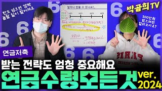
48:01ETF·연금 · [연금시리즈] 연금만 A부터 Z까지!!
☂️ 연금 받는 것도 전략이 필요합니다ㅣ연금시리즈 6편ㅣ연금수령ㅣ연금수령한도
박곰희TV
2024.05.06 · 조회수 29만 · 후기 310
22:20
ETF·연금 · SolSol한 ETF
미국 AI반도체 대장만 모은 ETF가 나왔습니다! (ft.SOL 미국AI반도체칩메이커)
전인구경제연구소
2024.05.02 · 조회수 3.8만 · 후기 29
9:56
주식입문 · [쌩초보반] 투자를 시작하는 쌩초보를 위한 기초지식
🧑🏻🏫 13강 - '투자'라는 말의 사전적 의미ㅣ쌩초보반 무료공유ㅣ🏫곰희스쿨
박곰희TV
2024.05.01 · 조회수 6.3만 · 후기 42
8:31
주식입문 · [쌩초보반] 투자를 시작하는 쌩초보를 위한 기초지식
🧑🏻🏫 12강 - 사회초년생과 은퇴자의 투자계획ㅣ쌩초보반 무료공유ㅣ🏫곰희스쿨
박곰희TV
2024.04.19 · 조회수 8.9만 · 후기 52
11:38
주식입문 · [쌩초보반] 투자를 시작하는 쌩초보를 위한 기초지식
🧑🏻🏫 11강 - 나만의 투자계획 세우기ㅣ쌩초보반 무료공유ㅣ🏫곰희스쿨
박곰희TV
2024.04.16 · 조회수 8.7만 · 후기 35
10:45
주식입문 · [쌩초보반] 투자를 시작하는 쌩초보를 위한 기초지식
🧑🏻🏫 10강 - 단리와 복리ㅣ쌩초보반 무료공유ㅣ🏫곰희스쿨
박곰희TV
2024.04.15 · 조회수 8.4만 · 후기 41
10:58
주식입문 · 신혼부부 재테크
돈 잘 모으는 언니는 어떻게 명품을 (싸게) 살까?!
구채희
2024.04.10 · 조회수 1.0만 · 후기 17
8:38
주식입문 · [쌩초보반] 투자를 시작하는 쌩초보를 위한 기초지식
🧑🏻🏫 9강 - 수익으로 소비하면 평생 살 수 있습니다ㅣ쌩초보반 무료공유ㅣ🏫곰희스쿨
박곰희TV
2024.04.09 · 조회수 10만 · 후기 52
6:36
주식입문 · [쌩초보반] 투자를 시작하는 쌩초보를 위한 기초지식
🧑🏻🏫 8강 - 자산은 미래가치를 당겨옵니다ㅣ쌩초보반 무료공유ㅣ🏫곰희스쿨
박곰희TV
2024.04.06 · 조회수 8.0만 · 후기 35
11:32
주식입문 · [쌩초보반] 투자를 시작하는 쌩초보를 위한 기초지식
🧑🏻🏫 7강 - 소비재를 줄이고 자산을 늘리자ㅣ쌩초보반 무료공유ㅣ🏫곰희스쿨
박곰희TV
2024.04.04 · 조회수 9.2만 · 후기 32
5:38
주식입문 · [쌩초보반] 투자를 시작하는 쌩초보를 위한 기초지식
🧑🏻🏫 6강 - 기회는 동등하다ㅣ쌩초보반 무료공유ㅣ🏫곰희스쿨
박곰희TV
2024.03.31 · 조회수 9.6만 · 후기 53
9:58
주식입문 · [쌩초보반] 투자를 시작하는 쌩초보를 위한 기초지식
🧑🏻🏫 5강 - 노후준비를 위한 성공방정식ㅣ쌩초보반 무료공유ㅣ🏫곰희스쿨
박곰희TV
2024.03.29 · 조회수 12만 · 후기 67
9:53
주식입문 · [쌩초보반] 투자를 시작하는 쌩초보를 위한 기초지식
🧑🏻🏫 4강 - 월급 빼고 다 오르는 이유ㅣ쌩초보반 무료공유ㅣ🏫곰희스쿨
박곰희TV
2024.03.27 · 조회수 12만 · 후기 69
7:50
주식입문 · [쌩초보반] 투자를 시작하는 쌩초보를 위한 기초지식
🧑🏻🏫 3강 - 투자를 해야 하는 이유ㅣ쌩초보반 무료공유ㅣ🏫곰희스쿨
박곰희TV
2024.03.26 · 조회수 13만 · 후기 48
15:35
주식입문 · [쌩초보반] 투자를 시작하는 쌩초보를 위한 기초지식
🧑🏻🏫 2강 - 강사소개ㅣ쌩초보반 무료공유ㅣ🏫곰희스쿨
박곰희TV
2024.03.25 · 조회수 13만 · 후기 111
8:43
주식입문 · [쌩초보반] 투자를 시작하는 쌩초보를 위한 기초지식
🧑🏻🏫 1강 - 우리는 앞으로 이런 걸 배우게 됩니다ㅣ쌩초보반 무료공유ㅣ🏫곰희스쿨
박곰희TV
2024.03.24 · 조회수 30만 · 후기 244
27:09
ETF·연금 · [연금시리즈] 연금만 A부터 Z까지!!
☂️ 연금으로 받는 게 아니면 16.5%의 기타소득세를 내야합니다ㅣ연금시리즈 5편ㅣ기타소득세
박곰희TV
2024.02.28 · 조회수 4.7만 · 후기 103
24:58
ETF·연금 · [연금시리즈] 연금만 A부터 Z까지!!
☂️ 절세계좌면 세금 안내는 거 아닌가요?ㅣ연금시리즈 4편ㅣ과세이연과 연금소득세
박곰희TV
2024.02.26 · 조회수 5.9만 · 후기 67
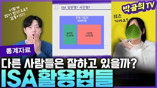
35:20ETF·연금 · [ISA] 누구나 갖고 있어야 할 만능계좌
📊 ISA 혹시 나만 하고 있는 건 아니겠지?ㅣ통계자료ㅣ금융투자협회
박곰희TV
2024.02.06 · 조회수 19만 · 후기 199
19:46
ETF·연금 · 절세계좌 ┃ ISA·연금저축·IRP
3년간 ISA로 만드는 최강의 배당투자법 (ft. 분기배당, 금융주, ETF)
수페TV
2024.02.06 · 조회수 37만 · 후기 431
37:29
ETF·연금 · [연금시리즈] 연금만 A부터 Z까지!!
☂️ 연금저축하면 세액공제는 어느 계좌로 들어오나요?ㅣ연금시리즈 3편ㅣ연말정산과 세액공제
박곰희TV
2024.02.05 · 조회수 12만 · 후기 154
23:02
ETF·연금 · 절세계좌 ┃ ISA·연금저축·IRP
연금저축, ISA, IRP 저는 이렇게 합니다! (ft. 연령별 계좌 전략)
수페TV
2024.01.23 · 조회수 39만 · 후기 951
34:09
ETF·연금 · [연금시리즈] 연금만 A부터 Z까지!!
☂️ 연금저축 한도 설정하라는 데요?? 얼마로 해요??ㅣ연금시리즈 2편ㅣ납입한도와 공제한도
박곰희TV
2024.01.16 · 조회수 17만 · 후기 182
33:41
ETF·연금 · [연금시리즈] 연금만 A부터 Z까지!!
☂️ 연금저축 그거 꼭 해야 합니까?ㅣ연금시리즈 1편ㅣ연금저축
박곰희TV
2024.01.14 · 조회수 20만 · 후기 160
14:22
주식입문 · 신혼부부 재테크
평생 세금 없이 자녀에게 2억 물려주는법 !
구채희
2024.01.04 · 조회수 5.7만 · 후기 44
15:01
주식입문 · 신혼부부 재테크
엄마가 1억 모아줄게! 자녀 통장관리 3가지 방법
구채희
2023.12.28 · 조회수 5.0만 · 후기 30
24:32
주식입문 · 신혼부부 재테크
2년 만에 돌아온 가계부 언박싱! 대출이자 때문에 죽겠어요.. #구채희가계부 #채움가계부
구채희
2023.12.18 · 조회수 3.9만 · 후기 92
14:48
주식입문 · 신혼부부 재테크
인생 어떻게 풀릴지 몰라요. 상위 1% 부자들이 돈 보다 신경 쓰는 이것! (구독자 이벤트)
구채희
2023.12.04 · 조회수 1.3만 · 후기 43
14:59
주식입문 · 신혼부부 재테크
3인가족 식비 70만원 도전!! 워킹맘 식비절약 VLOG
구채희
2023.11.24 · 조회수 3.3만 · 후기 41
19:59
주식입문 · 신혼부부 재테크
"환상을 버리세요" 영어유치원 1년 솔직 후기. 영유 장단점
구채희
2023.11.16 · 조회수 4.1만 · 후기 73
16:03
주식입문 · 신혼부부 재테크
영어유치원 1년 보내고 느낀 점. 가성비, 아웃풋, 한달 원비와 사교육비 (1부)
구채희
2023.11.12 · 조회수 9.1만 · 후기 125
17:17
주식입문 · 신혼부부 재테크
하는 것마다 잘 되는 사람들은 모두 이걸 갖고 있어요 (with 오은환)
구채희
2023.10.22 · 조회수 7,601 · 후기 12
5:56
주식입문 · 신혼부부 재테크
단기간에 10억 모은 내가 좋은 카드를 찾는 법 + 카드관리 꿀팁
구채희
2023.10.13 · 조회수 1.3만 · 후기 9
8:41
주식입문 · 신혼부부 재테크
외벌이 부부가 인생의 변수에서 살아남는 법
구채희
2023.09.24 · 조회수 1.2만 · 후기 11
20:03
주식입문 · 신혼부부 재테크
내 인생 짠순 모먼트 역대급 사연들ㅋㅋ 건물주 되려면 이 정도는 돼야!! (with 람지언니)
구채희
2023.09.14 · 조회수 1.1만 · 후기 20
13:33
주식입문 · 신혼부부 재테크
내 아이 천재성을 없애는 부모의 사소한 습관
구채희
2023.09.08 · 조회수 4,137 · 후기 2
10:33
주식입문 · 신혼부부 재테크
통신비를 줄이는 가장 현실적인 방법
구채희
2023.08.29 · 조회수 1.5만 · 후기 25
8:38
주식입문 · 신혼부부 재테크
안전한 저축은행 예적금 고르는 법
구채희
2023.08.22 · 조회수 7,385 · 후기 5
14:52
주식입문 · 신혼부부 재테크
해고된 워킹맘 연 2억 벌게해준 3가지
구채희
2023.08.15 · 조회수 2.2만 · 후기 23
8:41
주식입문 · 신혼부부 재테크
내가 부수입으로 생활비 방어하고 저축 늘리는 방법 (2부)
구채희
2023.08.10 · 조회수 1.6만 · 후기 13
11:37
주식입문 · 신혼부부 재테크
내가 부수입으로 천만원 모으는 방법 (1부)
구채희
2023.08.08 · 조회수 3.0만 · 후기 32
10:54
주식입문 · 신혼부부 재테크
평생 갈 인연 vs 끊어낼 인연, 저는 이렇게 판단합니다!
구채희
2023.08.01 · 조회수 1.1만 · 후기 19
16:44
주식입문 · 신혼부부 재테크
가난해지기 전 나타나는 불길한 징조 4가지
구채희
2023.07.26 · 조회수 6.8만 · 후기 41
15:18
주식입문 · 신혼부부 재테크
1억 모으기 10번 성공시킨 나만의 루틴 5가지
구채희
2023.07.18 · 조회수 17만 · 후기 108
20:38
주식입문 · 신혼부부 재테크
내 아이 부자 만들기! 재테크 하는 엄마의 자녀경제교육 꿀팁 4
구채희
2023.06.23 · 조회수 1.0만 · 후기 18
19:31
주식입문 · 신혼부부 재테크
35세 모은 돈 없는 남친. 결혼 망설여지는데.. 저 속물인가요?
구채희
2023.06.01 · 조회수 14만 · 후기 542
7:04
주식입문 · 신혼부부 재테크
평범한 부부가 결혼 5년 만에 10억을 만든 과정 (클래스유)
구채희
2023.05.26 · 조회수 1.4만 · 후기 22
15:21
주식입문 · 신혼부부 재테크
결혼 7년차의 고백. 이런 사람과 결혼하면 후회합니다..
구채희
2023.05.07 · 조회수 10만 · 후기 163
26:19
주식입문 · 신혼부부 재테크
여행 때문에 돈이 안 모이는 외벌이 4인가구 가계부 코칭 #국민가계부
구채희
2023.04.04 · 조회수 4.4만 · 후기 73
10:21
주식입문 · 신혼부부 재테크
돈 없고 금수저 아니어도 빠르게 1억 모으는 방법! (저축 시스템)
구채희
2023.03.26 · 조회수 20만 · 후기 72
19:26
주식입문 · 신혼부부 재테크
돈이 줄줄 새는 부부들의 악습관 5가지
구채희
2023.03.18 · 조회수 5.9만 · 후기 45
6:19
미국주식 · [해외주식] 글로벌 시대에 걸맞은 글로벌 투자!!
PTP종목이 뭐길래 세금을 10%나 내요? (ft.미국투자자가 알아야 할 2023년 세금)
박곰희TV
2023.02.24 · 조회수 1.5만 · 후기 25
9:11
주식입문 · 신혼부부 재테크
[클래스유 강의 OT] 평범한 신혼부부가 순자산 10억 모으는 가장 빠른 방법
구채희
2023.02.14 · 조회수 7.3만 · 후기 50
13:38
주식입문 · 신혼부부 재테크
13년차 웨딩플래너가 솔직하게 말하는 갓성비 결혼준비 팁 (웨딩오빠 2부)
구채희
2022.12.05 · 조회수 3.0만 · 후기 7
15:51
주식입문 · 신혼부부 재테크
"결혼 빈부격차 역대급이에요" 적은 돈으로 가성비 있게 결혼하는 법 (결혼비용의 모든 것)
구채희
2022.11.28 · 조회수 4.3만 · 후기 18
25:44
주식입문 · 신혼부부 재테크
카드할부와 자기계발 중독 3년차 신혼부부 충격의 가계부 코칭
구채희
2022.09.11 · 조회수 9.1만 · 후기 55
24:25
주식입문 · 신혼부부 재테크
부모님께 섣부르게 용돈 드리다 가난해집니다
구채희
2022.09.07 · 조회수 4.1만 · 후기 51
25:48
주식입문 · 신혼부부 재테크
월급 550 무주택 신혼부부, 골프 배우는 게 사치인가요? #가계부코칭
구채희
2022.08.12 · 조회수 3.5만 · 후기 56
22:22
주식입문 · 신혼부부 재테크
3040 유부녀들이 뽑은 반드시 걸러야 할 결혼상대자 유형 5
구채희
2022.08.02 · 조회수 4.4만 · 후기 64
20:25
주식입문 · 신혼부부 재테크
매달 50만원 더 버는 현실적인 방법 소개합니다 (절약편)
구채희
2022.07.20 · 조회수 29만 · 후기 106
13:00
주식입문 · 신혼부부 재테크
30대 신혼부부의 두번째 🏘내집마련 vlog. 6천만원으로 지방 아파트 투자하기
구채희
2022.05.27 · 조회수 11만 · 후기 127
21:05
ETF·연금 · [ISA] 누구나 갖고 있어야 할 만능계좌
ISA를 할까? 연금저축을 할까? (ft.두 절세계좌의 공통점과 차이점)
박곰희TV
2022.03.29 · 조회수 55만 · 후기 539
11:22
ETF·연금 · [해외주식] 글로벌 시대에 걸맞은 글로벌 투자!!
[해외주식] 미국리츠에 투자하는 다양한 방법들 (ft.펀드/국내ETF/미국ETF)
박곰희TV
2022.01.19 · 조회수 3.6만 · 후기 35
1:59:27
ETF·연금 · [ISA] 누구나 갖고 있어야 할 만능계좌
[ASK곰희] ISA 댓글 문의에 답변드립니다 (질문101번~200번)_아래의 '더보기'를 눌러보세요^^
박곰희TV
2022.01.13 · 조회수 3.6만 · 후기 55
16:25
미국주식 · [해외주식] 글로벌 시대에 걸맞은 글로벌 투자!!
[해외주식] 미국빌딩도 리츠가 있어서 살 수 있습니다 (ft.개념/시장/장단점/대표리츠들)
박곰희TV
2021.12.10 · 조회수 2.4만 · 후기 39
13:18
ETF·연금 · [ISA] 누구나 갖고 있어야 할 만능계좌
[연금저축] 연금저축은 중도인출이 되나요? (ft.연금저축/IRP/ISA/위탁계좌의 중도인출)
박곰희TV
2021.12.01 · 조회수 8.7만 · 후기 102
14:43
ETF·연금 · [해외주식] 글로벌 시대에 걸맞은 글로벌 투자!!
[해외주식] 미국ETF를 소개합니다 (ft.개념/장점/대표브랜드들/대표ETF들)
박곰희TV
2021.11.26 · 조회수 11만 · 후기 108
14:18
ETF·연금 · [해외주식] 글로벌 시대에 걸맞은 글로벌 투자!!
[주식] 명품회사 주식을 사는 3가지 방법 (ft.유럽주식 직구/국내ETF/미국ETF)
박곰희TV
2021.11.13 · 조회수 3.8만 · 후기 66
1:00:01
주식입문 · 주린이 탈출! 주식투자 기초 강의
주린이도 한시간만에 끝내는 선물옵션 기초/이대호 기자
와이스트릿
2021.09.17 · 조회수 19만 · 후기 171
1:57:28
ETF·연금 · [ISA] 누구나 갖고 있어야 할 만능계좌
[ASK곰희] ISA 댓글 문의에 답변드립니다 (질문1번~100번)
박곰희TV
2021.09.14 · 조회수 29만 · 후기 379
12:10
ETF·연금 · [ISA] 누구나 갖고 있어야 할 만능계좌
[따라하기] 한국투자증권의 ISA를 서민형으로 함께 개설해보아요
박곰희TV
2021.09.11 · 조회수 13만 · 후기 82
16:46
ETF·연금 · [ISA] 누구나 갖고 있어야 할 만능계좌
[ASK곰희] ISA 건보료? 비과세? 이게 머선말이고? (by.편집자 마늘님의 궁금증)
박곰희TV
2021.08.27 · 조회수 8.2만 · 후기 135
13:29
주식입문 · 왕초보주식투자
하락장 시한폭탄 반대매매 확률 높은 주식 확인 방법
전인구경제연구소
2021.08.22 · 조회수 6.1만 · 후기 95
21:13
ETF·연금 · [ISA] 누구나 갖고 있어야 할 만능계좌
[계좌개설&이벤트] 중개형ISA 계좌개설 혜택비교 (at.2021년8월)
박곰희TV
2021.08.21 · 조회수 12만 · 후기 114
9:39
ETF·연금 · [ISA] 누구나 갖고 있어야 할 만능계좌
[상품지식] 이제 ISA에서 주식하면 세금 안냅니다
박곰희TV
2021.08.17 · 조회수 29만 · 후기 708
12:42
ETF·연금 · [ISA] 누구나 갖고 있어야 할 만능계좌
[상품지식] ISA로 수익 많이 나면 건보료 폭탄 맞나요?
박곰희TV
2021.08.11 · 조회수 12만 · 후기 260
14:23
ETF·연금 · 절세계좌 ┃ ISA·연금저축·IRP
나는 연금저축으로 ETF 투자한다! (ft.연금저축 포트폴리오)
수페TV
2021.08.01 · 조회수 32만 · 후기 595
19:39
미국주식 · [해외주식] 글로벌 시대에 걸맞은 글로벌 투자!!
[해외주식] 테슬라의 주주라면 이정도는 알아야겠죠? (재업)
박곰희TV
2021.07.26 · 조회수 1.5만 · 후기 25
21:38
주식입문 · 왕초보주식투자
성장주를 가장 저렴하게 살 수 있는 타이밍 U 투자법
전인구경제연구소
2021.07.19 · 조회수 4.9만 · 후기 83
6:05
주식입문 · 왕초보주식투자
이번에 제가 쓴 책을 소개합니다.(f.돈의흐름)
전인구경제연구소
2021.06.18 · 조회수 5.0만 · 후기 164
10:05
미국주식 · [해외주식] 글로벌 시대에 걸맞은 글로벌 투자!!
[해외주식] 알리바바의 주주라면 이정도는 알아야겠죠?
박곰희TV
2021.06.05 · 조회수 2.0만 · 후기 42
15:09
ETF·연금 · [ISA] 누구나 갖고 있어야 할 만능계좌
[계좌개설&이벤트] 중개형ISA 계좌개설 혜택비교 (at.2021년3월)
박곰희TV
2021.03.29 · 조회수 8.0만 · 후기 183
20:31
ETF·연금 · [ISA] 누구나 갖고 있어야 할 만능계좌
[ASK곰희] ISA? 이게 머선말이고? (by.편집자님의 한마디)
박곰희TV
2021.03.11 · 조회수 14만 · 후기 398
10:41
ETF·연금 · [ISA] 누구나 갖고 있어야 할 만능계좌
[상품지식] 대박 조짐 보이는 ISA 비과세만능계좌(aka.개인종합자산관리계좌)_21년2월 리뉴얼버전_2부
박곰희TV
2021.03.03 · 조회수 16만 · 후기 247
7:10
주식입문 · 왕초보주식투자
주가 상승 하기 전 신호는 무엇일까? (2부)
전인구경제연구소
2021.02.28 · 조회수 3.8만 · 후기 22
5:03
주식입문 · 왕초보주식투자
주가 상승 하기 전 신호는 무엇일까? (1부)
전인구경제연구소
2021.02.27 · 조회수 5.6만 · 후기 26
9:39
ETF·연금 · [ISA] 누구나 갖고 있어야 할 만능계좌
[상품지식] 대박 조짐 보이는 ISA 비과세만능계좌(aka.개인종합자산관리계좌)_21년2월 리뉴얼버전_1부
박곰희TV
2021.02.26 · 조회수 35만 · 후기 388
11:29
주식입문 · 왕초보주식투자
주식 시황 하루 10분 만에 정리하는 법(2부)
전인구경제연구소
2021.02.21 · 조회수 4.7만 · 후기 44
11:56
주식입문 · 왕초보주식투자
주식 시황 하루 10분 만에 정리하는 법(1부)
전인구경제연구소
2021.02.20 · 조회수 10만 · 후기 56
23:01
주식입문 · 왕초보주식투자
주린이를 위한 기초 차트 보는 법(놀면뭐하니 주식공부하자)
전인구경제연구소
2021.02.12 · 조회수 321만 · 후기 657
27:22
재무제표 · 왕초보주식투자
주식초보는 PER, ROE 두 개를 알아야 합니다.
전인구경제연구소
2021.02.11 · 조회수 19만 · 후기 85
28:26
주식입문 · 왕초보주식투자
피터린치의 생활 속 10배 오르는 주식 찾는 법(설날특집 주식공부2부)
전인구경제연구소
2021.02.10 · 조회수 12만 · 후기 86
56:10
주식입문 · 왕초보주식투자
주식 기초 용어 총정리(설날특집 주식공부 1부)
전인구경제연구소
2021.02.10 · 조회수 115만 · 후기 581
18:01
주식입문 · 왕초보주식투자
(놀면뭐하니4부)빚투하면 왜 망할까(신용, 미수, 담보 삼위일체)
전인구경제연구소
2021.02.07 · 조회수 11만 · 후기 149
6:14
주식입문 · 왕초보주식투자
(구독자30만이벤트) 주식초보 탈출 시켜드릴게요 (주식투자 일주일만에 뽀개기)
전인구경제연구소
2021.02.04 · 조회수 4.8만 · 후기 627
12:45
미국주식 · [해외주식] 글로벌 시대에 걸맞은 글로벌 투자!!
[해외주식] 페이스북의 주주라면 반드시 알아야 할 것들
박곰희TV
2021.01.31 · 조회수 2.7만 · 후기 56
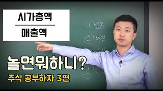
18:11주식입문 · 왕초보주식투자
놀면뭐하니 3편 PSR로 저평가 주식 찾는 법(주식, 시가총액, 매출)
전인구경제연구소
2021.01.26 · 조회수 12만 · 후기 75
21:07
주식입문 · 왕초보주식투자
ROE 제대로 공부하자(가짜 ROE에 속지 말기)
전인구경제연구소
2021.01.01 · 조회수 38만 · 후기 316
31:19
재무제표 · 왕초보주식투자
놀면뭐하니 주식공부하자 1탄 진짜PER 구하기
전인구경제연구소
2020.12.28 · 조회수 71만 · 후기 434
11:42
주식입문 · 왕초보주식투자
2가지만 알면 주식투자 끝입니다.
전인구경제연구소
2020.12.15 · 조회수 40만 · 후기 311
10:03
미국주식 · [해외주식] 글로벌 시대에 걸맞은 글로벌 투자!!
[해외주식] 아마존의 주주라면 반드시 알아야 할 것들(2편)
박곰희TV
2020.11.04 · 조회수 2.4만 · 후기 49
10:21
미국주식 · [해외주식] 글로벌 시대에 걸맞은 글로벌 투자!!
[해외주식] 아마존의 주주라면 반드시 알아야 할 것들(1편)
박곰희TV
2020.10.31 · 조회수 3.7만 · 후기 57
26:35
미국주식 · 해외투자
동력없이 굴러가는 니콜라 수소트럭? 힌덴버그 보고서 원문 보기
전인구경제연구소
2020.09.20 · 조회수 2.8만 · 후기 79
6:09
ETF·연금 · 왕초보주식투자
(왕초보 주식투자)금 은 농산물 ETF로 투자하기
전인구경제연구소
2020.08.23 · 조회수 3.2만 · 후기 25
11:47
미국주식 · [해외주식] 글로벌 시대에 걸맞은 글로벌 투자!!
[해외주식] 구글의 주주라면 반드시 알아야 할 것들 (2편)
박곰희TV
2020.08.09 · 조회수 4.5만 · 후기 188
13:44
미국주식 · [해외주식] 글로벌 시대에 걸맞은 글로벌 투자!!
[해외주식] 구글의 주주라면 반드시 알아야 할 것들 (1편)
박곰희TV
2020.08.05 · 조회수 8.2만 · 후기 272
12:42
ETF·연금 · 해외투자
절대 하면 안 되는 위험한 미국ETF 모음(3x,-3x)
전인구경제연구소
2020.07.02 · 조회수 18만 · 후기 210
17:30
미국주식 · [해외주식] 글로벌 시대에 걸맞은 글로벌 투자!!
[해외주식] 마이크로소프트의 주주라면 반드시 알아야 할 기업개요
박곰희TV
2020.06.29 · 조회수 8.6만 · 후기 336
17:54
미국주식 · 왕초보주식투자
주식초보 계좌 간단하게 개설방법 국내주식 해외주식 사는 법
전인구경제연구소
2020.06.21 · 조회수 7.0만 · 후기 71
14:03
주식입문 · 왕초보주식투자
우리도 공매도 세력을 이길 수 있다 (공매도 뜻, 종류,방법, 대처법)
전인구경제연구소
2020.06.08 · 조회수 12만 · 후기 240
10:01
미국주식 · [해외주식] 글로벌 시대에 걸맞은 글로벌 투자!!
[해외주식] 애플의 주주라면 반드시 알아야 할 기업개요
박곰희TV
2020.06.02 · 조회수 8.9만 · 후기 344
8:51
주식입문 · 왕초보주식투자
진짜 배당주를 찾는 비법
전인구경제연구소
2020.05.23 · 조회수 14만 · 후기 69
11:29
주식입문 · 왕초보주식투자
[왕초보주식투자] 6편 위험한주식이끌리는이유
전인구경제연구소
2020.05.11 · 조회수 35만 · 후기 239
12:49
주식입문 · 왕초보주식투자
[왕초보주식투자] 5편 분할매수/매도 왜 해야되나요?
전인구경제연구소
2020.05.04 · 조회수 13만 · 후기 79
13:15
미국주식 · [해외주식] 글로벌 시대에 걸맞은 글로벌 투자!!
[해외주식] 미국투자를 해야만 하는 9가지 이유
박곰희TV
2020.04.30 · 조회수 23만 · 후기 601
8:36
재무제표 · 왕초보주식투자
[왕초보주식투자] 3편 PER, PBR이 뭐야?
전인구경제연구소
2020.04.20 · 조회수 18만 · 후기 114
9:47
주식입문 · 왕초보주식투자
[왕초보주식투자] 2편 가치투자 VS 기술적 분석 어느 것이 더 좋을까?
전인구경제연구소
2020.04.13 · 조회수 4.0만 · 후기 55
12:04
미국주식 · [해외주식] 글로벌 시대에 걸맞은 글로벌 투자!!
[해외주식] 미국의 '주식시장'을 소개합니다
박곰희TV
2020.03.27 · 조회수 19만 · 후기 770
9:41
미국주식 · 해외투자
베트남 부동산(아파트) 투자 문제점 (웹드라마)
전인구경제연구소
2020.03.26 · 조회수 5,180 · 후기 48
9:58
주식입문 · 왕초보주식투자
[왕초보주식투자] 1편 주식의 역사 주식이란 무엇일까?
전인구경제연구소
2020.03.23 · 조회수 5.3만 · 후기 37
13:57
미국주식 · 해외투자
인도네시아 주식계좌 만들었습니다
전인구경제연구소
2020.03.20 · 조회수 2.1만 · 후기 44
14:09
ETF·연금 · [ISA] 누구나 갖고 있어야 할 만능계좌
[상품지식] ISA 다시태어난 비과세만능계좌 (aka.개인종합자산관리계좌)
박곰희TV
2020.02.23 · 조회수 13만 · 후기 462
14:45
미국주식 · 해외투자
베트남주식투자 그것이 알고싶다 주식분석 Best3
전인구경제연구소
2020.02.14 · 조회수 1.8만 · 후기 46
10:44
미국주식 · 해외투자
베트남 미술투자를 해보았습니다. 왜 100만원을 주고 샀을까?
전인구경제연구소
2020.02.07 · 조회수 5,612 · 후기 25
16:14
미국주식 · 해외투자
해외투자여행 라오스편 - 여기는 못 먹어도 10배다
전인구경제연구소
2020.01.19 · 조회수 2.4만 · 후기 63
5:30
미국주식 · 해외투자
무비자로 태국은행 주식계좌 개설하기
전인구경제연구소
2019.08.01 · 조회수 1.0만 · 후기 43
18:43
미국주식 · 해외투자
태국 바트환율이 상승한 진짜 이유
전인구경제연구소
2019.07.04 · 조회수 4.2만 · 후기 112
해당 조건의 강의가 없습니다.
각 강의의 저작권은 해당 마스터에게 있으며, 웨일베이스는 마스터의 강의를 소개하고 수강 환경을 제공합니다. 조회수·후기 수는 2026.10.15 기준입니다.